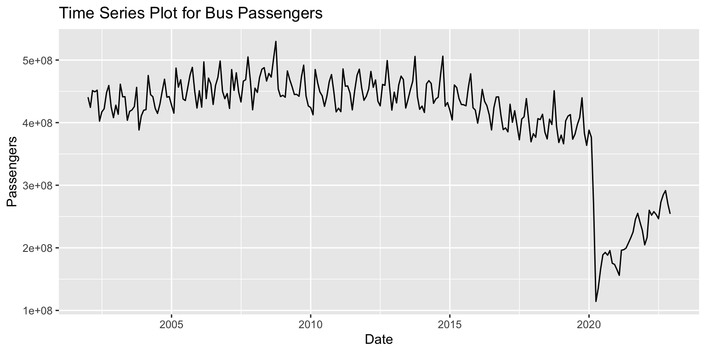
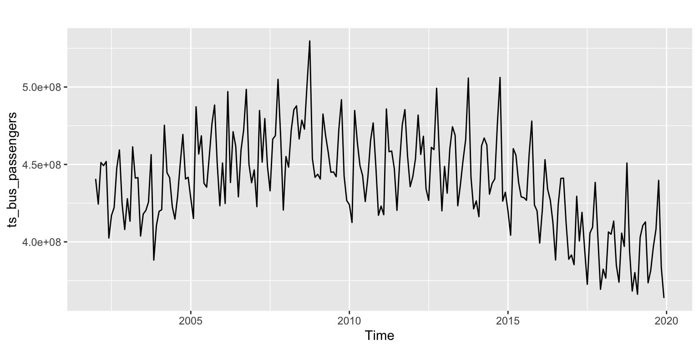
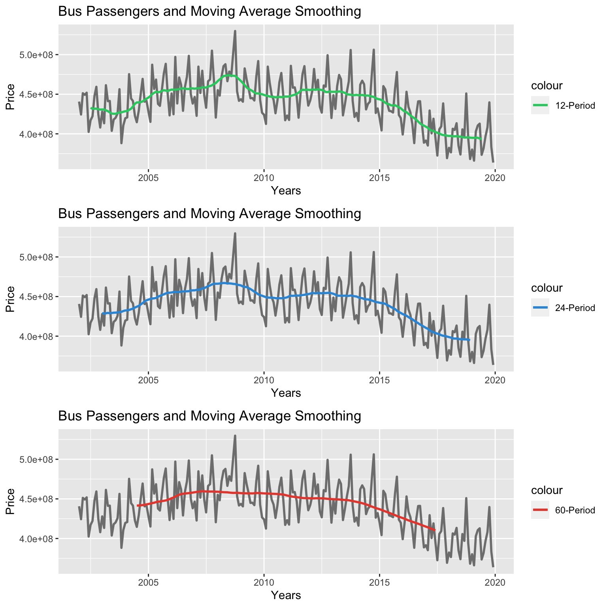
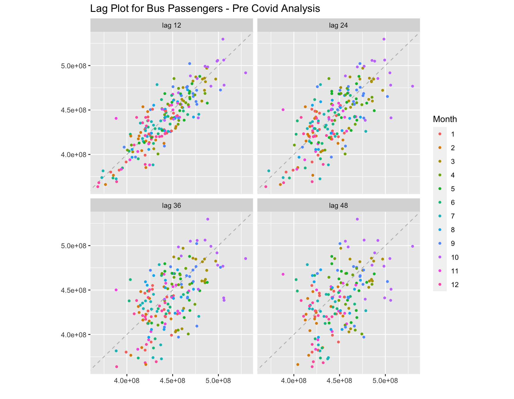
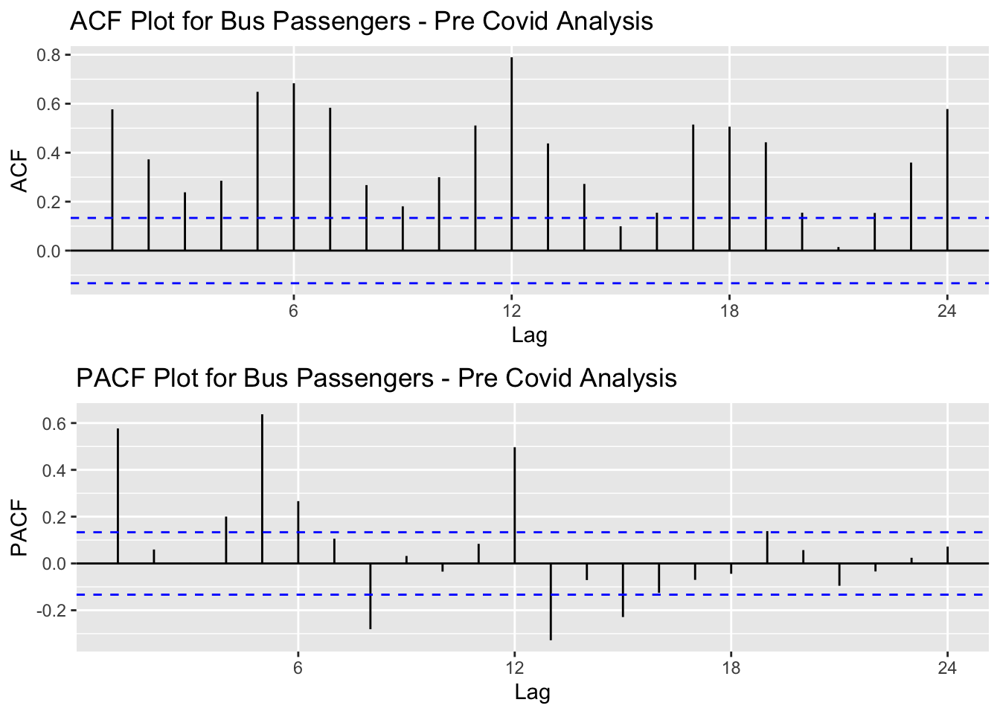
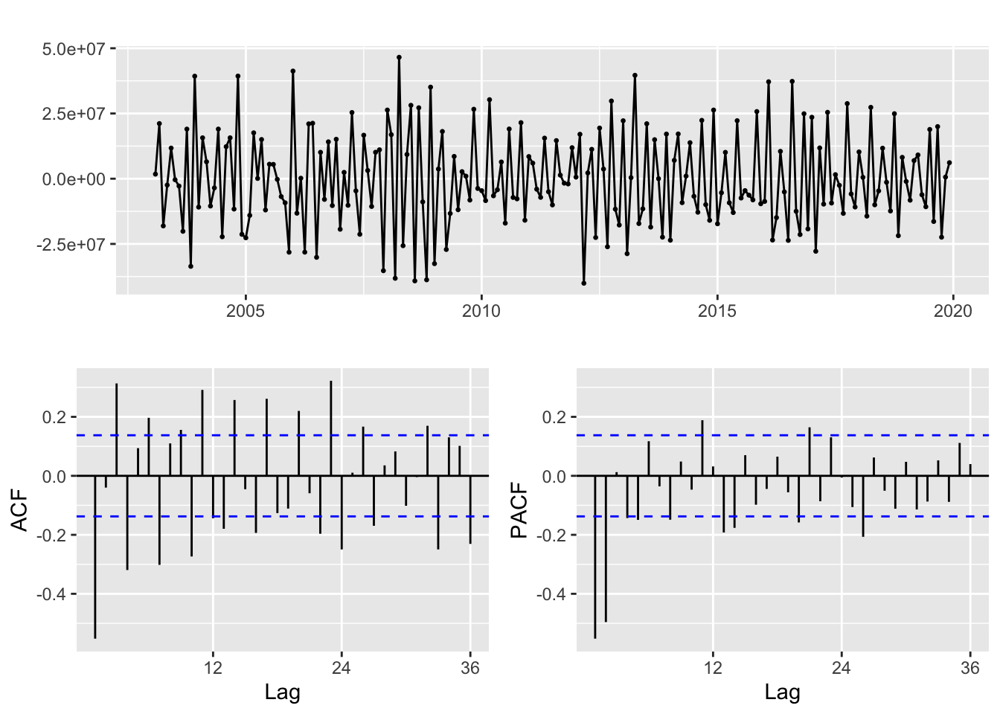
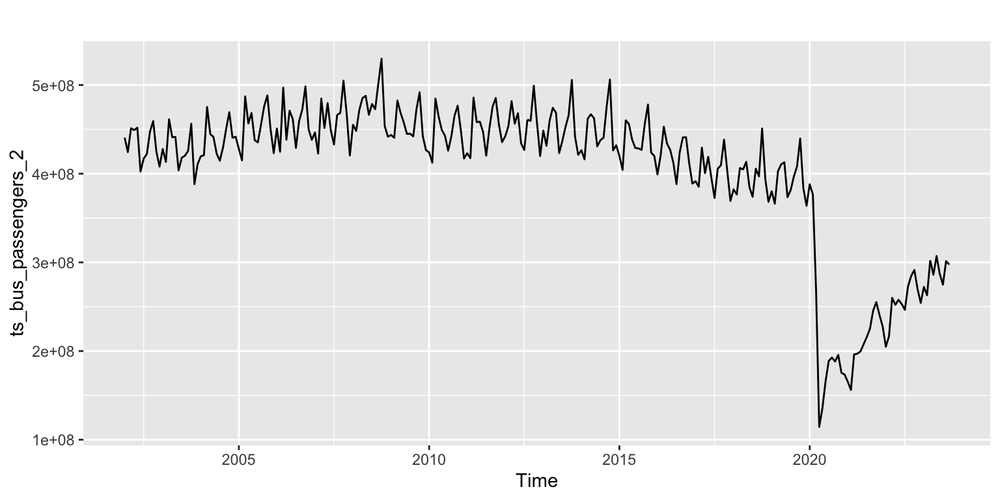
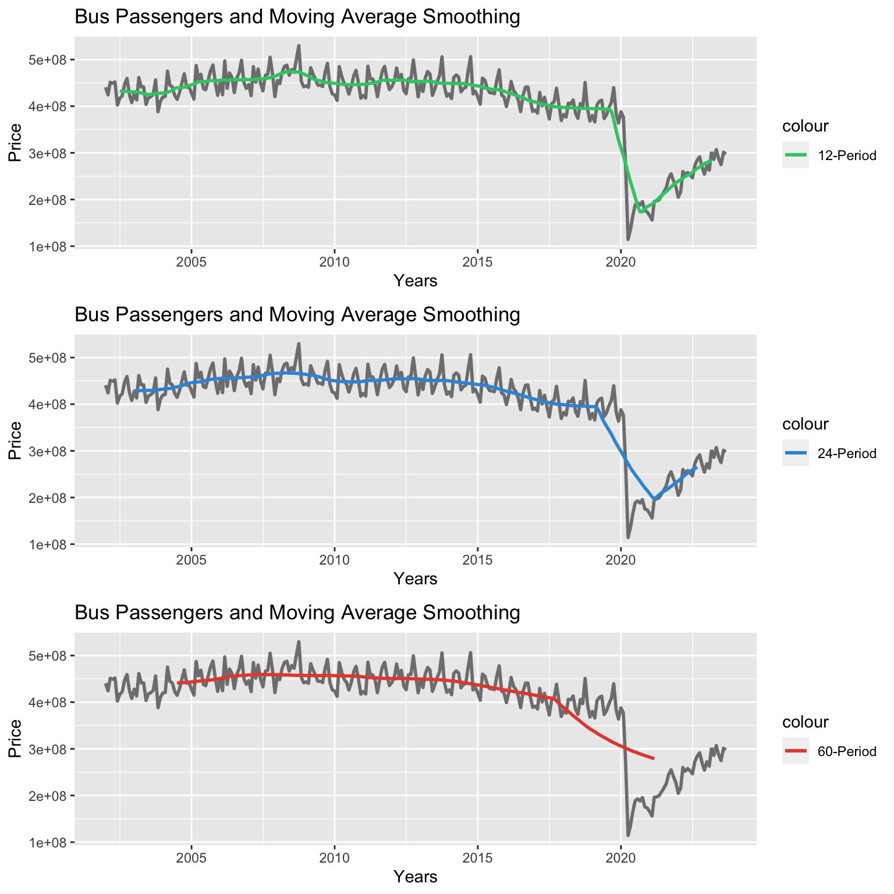
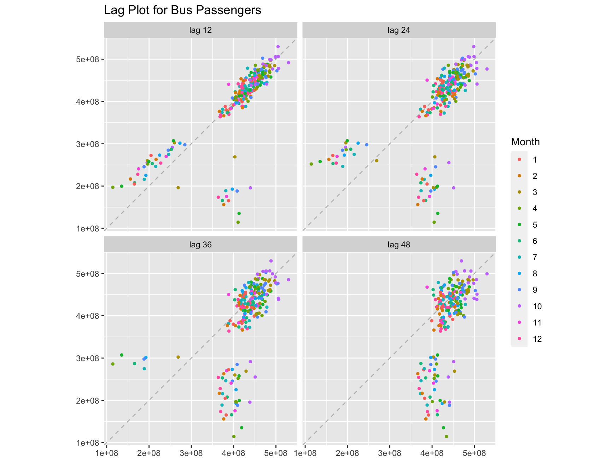
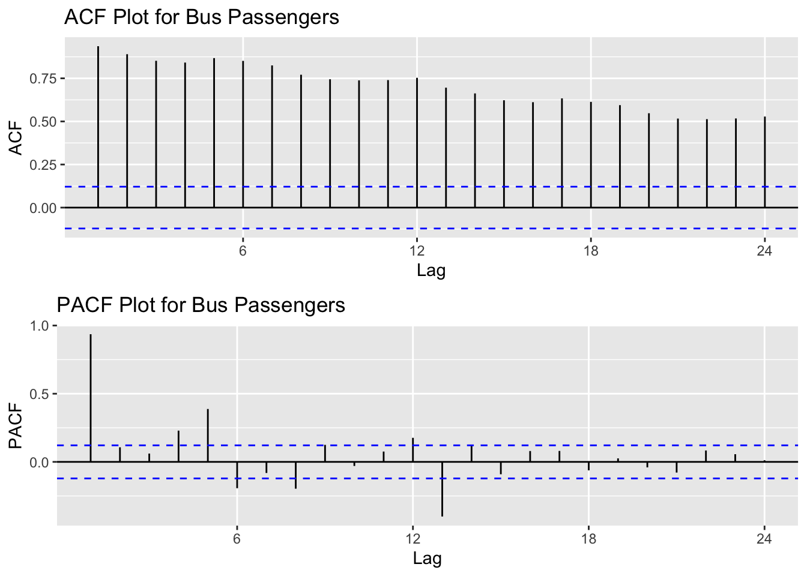

# Import datasetdf_bus_passengers <-read_csv('../data/viz_bus_passengers.csv')# Select relevant columnsnames(df_bus_passengers) <-c('DATE', 'Value')# Filter informationdf_bus_passengers <- df_bus_passengers %>%filter(year(DATE) >=2000&year(DATE) <=2022)# Create a sequence of dates from start_date to end_datestart_date <-as.Date(min(df_bus_passengers$DATE)) end_date <-as.Date(max(df_bus_passengers$DATE)) # Create data rangedate_range <-seq(start_date, end_date, by ="month")# Create a dataset with the date rangedate_dataset <-data.frame(DATE = date_range)# Merge dataframesdf_bus_passengers <-merge(df_bus_passengers, date_dataset, by.x ="DATE", by.y ="DATE", all =TRUE)# Extract rows with missing valuesdf_na_rows <- df_bus_passengers[which(rowSums(is.na(df_bus_passengers)) >0),]# Extract columns with missing valuesdf_na_cols <- df_bus_passengers[, which(colSums(is.na(df_bus_passengers)) >0)]# Check for missing values# is.na(df_bus_passengers)# Create the timeseries objectts_bus_passengers_2 <-ts(df_bus_passengers$Value,start=c(2002, 01, 01),frequency =12)# autoplot(ts_bus_passengers_2)# Create time series plotggplot(df_bus_passengers, aes(x = DATE, y = Value)) +geom_line() +# Use geom_line() for a time series plotlabs(title ="Time Series Plot for Bus Passengers",x ="Date",y ="Passengers" )

Pre-COVID Analysis
Time Series Plot Code
# Filter informationdf_bus_passengers_PC <- df_bus_passengers %>%filter(year(DATE) >=2000&year(DATE) <2020)# Create the timeseries objectts_bus_passengers_PC <-ts(df_bus_passengers_PC$Value,start=c(2002, 01, 01),frequency =12)ts_bus_passengers <- ts_bus_passengers_PC# Create time series plotautoplot(ts_bus_passengers)

Moving Average smoothing
# List of monthsdate_seq <-seq(as.Date("2002-01-01"), length.out =length(ts_bus_passengers), by ="month")# Moving Average Smoothing - small numbermas_1_bus_passengers <-ma(ts_bus_passengers, order =12)# Moving Average Smoothing - medium numbermas_2_bus_passengers <-ma(ts_bus_passengers, order =24)# Moving Average Smoothing - high numbermas_3_bus_passengers <-ma(ts_bus_passengers, order =60)# Plot the Time Series and the Moving Average Smoothing curvesmas_1_plot <-ggplot() +geom_line(aes(x = date_seq, y = ts_bus_passengers, color ="Original"), size =1) +geom_line(aes(x = date_seq, y = mas_1_bus_passengers, color ="12-Period"), size =1) +scale_color_manual(values =c("Passengers"="black", "12-Period"="#2ECC71")) +labs(title ="Bus Passengers and Moving Average Smoothing", x ="Years", y ="Price")# Plot the Time Series and the Moving Average Smoothing curvesmas_2_plot <-ggplot() +geom_line(aes(x = date_seq, y = ts_bus_passengers, color ="Original"), size =1) +geom_line(aes(x = date_seq, y = mas_2_bus_passengers, color ="24-Period"), size =1) +scale_color_manual(values =c("Passengers"="black", "24-Period"="#3498DB")) +labs(title ="Bus Passengers and Moving Average Smoothing", x ="Years", y ="Price")# Plot the Time Series and the Moving Average Smoothing curvesmas_3_plot <-ggplot() +geom_line(aes(x = date_seq, y = ts_bus_passengers, color ="Original"), size =1) +geom_line(aes(x = date_seq, y = mas_3_bus_passengers, color ="60-Period"), size =1) +scale_color_manual(values =c("Passengers"="black", "60-Period"="#E74C3C")) +labs(title ="Bus Passengers and Moving Average Smoothing", x ="Years", y ="Price") # Arrange Plots# grid.arrange(mas_1_plot, mas_2_plot, mas_3_plot, nrow=3)# Use ggsave to save the plot as a PNG imageggsave(grid.arrange(mas_1_plot, mas_2_plot, mas_3_plot, nrow=3), filename ="../images/5_bus_passengers.png", width =10, height =8)

Lag Plot Code
# Resize Plots#options(repr.plot.width = 25, repr.plot.height = 6) # Lag Plotgglagplot(ts_bus_passengers, set.lags =c(12, 24, 36, 48), do.lines=FALSE)+ggtitle("Lag Plot for Bus Passengers - Pre Covid Analysis")

ACF and PACF Plot Code
# Resize plotsoptions(repr.plot.width =5, repr.plot.height =2) # ACF Plotacf_bus_passengers <-ggAcf(ts_bus_passengers, main="ACF Plot for Bus Passengers - Pre Covid Analysis")# PACF Plotpacf_bus_passengers <-ggPacf(ts_bus_passengers, main="PACF Plot for Bus Passengers - Pre Covid Analysis")# Arrange Plotsgrid.arrange(acf_bus_passengers, pacf_bus_passengers, nrow=2)

Augmented Dickey-Fuller Test Code
# Augmented Dickey-Fuller Test calculationtest_bus_passengers <-adf.test(ts_bus_passengers)# Print resultsprint(test_bus_passengers)
Augmented Dickey-Fuller Test
data: ts_bus_passengers
Dickey-Fuller = -1.5362, Lag order = 5, p-value = 0.7706
alternative hypothesis: stationary
options(repr.plot.width =6, repr.plot.height =6) # Ordinary and Seasonal Differenced Plotts_bus_passengers %>%diff(lag=12) %>%diff() %>%ggtsdisplay() # do both

Complete Analysis
Time Series Plot Code
# Import datasetdf_bus_passengers <-read_csv('../data/viz_bus_passengers.csv')# Select relevant columnsnames(df_bus_passengers) <-c('DATE', 'Value')# Create the timeseries objectts_bus_passengers_2 <-ts(df_bus_passengers$Value,start=c(2002, 01, 01),frequency =12)# Create time series plotautoplot(ts_bus_passengers_2)

Moving Average smoothing
# List of monthsdate_seq <-seq(as.Date("2002-01-01"), length.out =length(ts_bus_passengers_2), by ="month")# Moving Average Smoothing - small numbermas_1_bus_passengers_2 <-ma(ts_bus_passengers_2, order =12)# Moving Average Smoothing - medium numbermas_2_bus_passengers_2 <-ma(ts_bus_passengers_2, order =24)# Moving Average Smoothing - high numbermas_3_bus_passengers_2 <-ma(ts_bus_passengers_2, order =60)# Plot the Time Series and the Moving Average Smoothing curvesmas_1_plot_2 <-ggplot() +geom_line(aes(x = date_seq, y = ts_bus_passengers_2, color ="Original"), size =1) +geom_line(aes(x = date_seq, y = mas_1_bus_passengers_2, color ="12-Period"), size =1) +scale_color_manual(values =c("Passengers"="black", "12-Period"="#2ECC71")) +labs(title ="Bus Passengers and Moving Average Smoothing", x ="Years", y ="Price")# Plot the Time Series and the Moving Average Smoothing curvesmas_2_plot_2 <-ggplot() +geom_line(aes(x = date_seq, y = ts_bus_passengers_2, color ="Original"), size =1) +geom_line(aes(x = date_seq, y = mas_2_bus_passengers_2, color ="24-Period"), size =1) +scale_color_manual(values =c("Passengers"="black", "24-Period"="#3498DB")) +labs(title ="Bus Passengers and Moving Average Smoothing", x ="Years", y ="Price")# Plot the Time Series and the Moving Average Smoothing curvesmas_3_plot_2 <-ggplot() +geom_line(aes(x = date_seq, y = ts_bus_passengers_2, color ="Original"), size =1) +geom_line(aes(x = date_seq, y = mas_3_bus_passengers_2, color ="60-Period"), size =1) +scale_color_manual(values =c("Passengers"="black", "60-Period"="#E74C3C")) +labs(title ="Bus Passengers and Moving Average Smoothing", x ="Years", y ="Price") # Arrange Plots# grid.arrange(mas_1_plot, mas_2_plot, mas_3_plot, nrow=3)# Use ggsave to save the plot as a PNG imageggsave(grid.arrange(mas_1_plot_2, mas_2_plot_2, mas_3_plot_2, nrow=3), filename ="../images/5_bus_passengers.png", width =10, height =8)

Lag Plot Code
# Resize Plots#options(repr.plot.width = 25, repr.plot.height = 6) # Lag Plotgglagplot(ts_bus_passengers_2, set.lags =c(12, 24, 36, 48), do.lines=FALSE)+ggtitle("Lag Plot for Bus Passengers")

ACF and PACF Plot Code
# Resize plotsoptions(repr.plot.width =5, repr.plot.height =2) # ACF Plotacf_bus_passengers <-ggAcf(ts_bus_passengers_2, main="ACF Plot for Bus Passengers")# PACF Plotpacf_bus_passengers <-ggPacf(ts_bus_passengers_2, main="PACF Plot for Bus Passengers")# Arrange Plotsgrid.arrange(acf_bus_passengers, pacf_bus_passengers, nrow=2)

Augmented Dickey-Fuller Test Code
# Augmented Dickey-Fuller Test calculationtest_bus_passengers <-adf.test(ts_bus_passengers_2)# Print resultsprint(test_bus_passengers)
Augmented Dickey-Fuller Test
data: ts_bus_passengers_2
Dickey-Fuller = -2.1977, Lag order = 6, p-value = 0.4926
alternative hypothesis: stationary